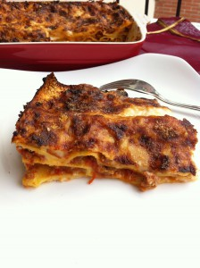

Recipes from the world
The best start : Lasagne
It’s time to make pleased all my friends around the world. So, here you are for you the most known, cooked, posted and delicious Italian recipe: lasagna bolognese.
I have to admit that everywhere I went I found people that could cook this delicious dish, one country one taste. You can find tons of variations and I don’t claim to have the most original ones but it’s very good and appreciated also by the most traditional friends I have. I cook this at least once every other week and it’s useful because it’s main and only course for my dinner and everyone in my family is satisfied
Not difficult to make, you need only time and patience: it’s not the dish you can prepare in 30 minutes when you’re back at home from the office with hungry husband and crying children. Let’s think in cooking all steps in advance and compose the lasagna 1 hr before your friends ring at the door. So, take note and good luck!
Ingredients (serving 4)
- 1 medium carrot
- 1 large onion
- 1 celery stalk
- 300 gr of beef meat, minced
- 200 gr of sausage meat, minced
- 1/2 glass of red wine
- olive oil
- 400 gr of tomato sauce
- 500 ml of milk
- 50 gr of butter
- 50 gr of flour
- 6 fresh lasagna sheets
- 4 table spoon of parmesan cheese, grated
- salt
- bay leaf
To give you some motivation and appetite,check what the final delicacy will look like :

Preparation
-
Ragù sauce: heat 3 table spoons of olive oil in a large saucepan on a medium heat. Add carrot, onion and celery peeled and finely chopped. Stir for around 15 minutes until the mixture is lightly colored.
-
Add the two types of meat, earlier minced, and stir breaking up meat with the spoon until the color is well brown. Pour the wine and mix until the alcohol is evaporated. Add the tomato sauce, a glass of water, a generous pinch of salt and two bay leaves.
-
Turn the heat down and cook on low heat for at least 2 hours with lid. Stir occasionally. If the sauce start to dry out add a splash of water.
-
This sauce can be made in advance and kept in the fridge 2-3 days. If you want you can also chilled it.
-
Béchamel (Besciamella): melt butter in a pan over medium heat. Add flour and stir until the mixture becomes like a cream. Pour in very warm milk and whisk vigorously until you have a smooth white sauce. Bring the sauce to a boil, reduce heat and cook for at least 10 minutes.
-
Assembly: lasagne sheets can be used without precooking only if they are fresh. If you have the dry ones cook them in boiling water according to the instructions of the package (usually4-5 minutes).
-
Spread three spoon of ragù into the bottom of a earthenware ovenproof dish (25x35cm approx.). Follow with a layer of lasagne sheets, add a third of your ragù and a third of béchamel. Repeat the process (sheets, ragù and béchamel) two more time and top with grated parmesan.
-
Spread three spoon of ragù into the bottom of a earthenware ovenproof dish (25x35cm approx.). Follow with a layer of lasagne sheets, add a third of your ragù and a third of béchamel. Repeat the process (sheets, ragù and béchamel) two more time and top with grated parmesan.
Buon appetito! 🙂
This recipe was brought to you by Olga!
Get back up there!
Wanna see other recipes?